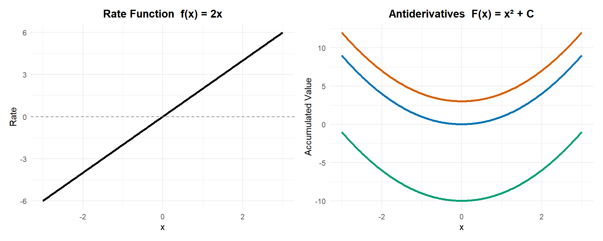
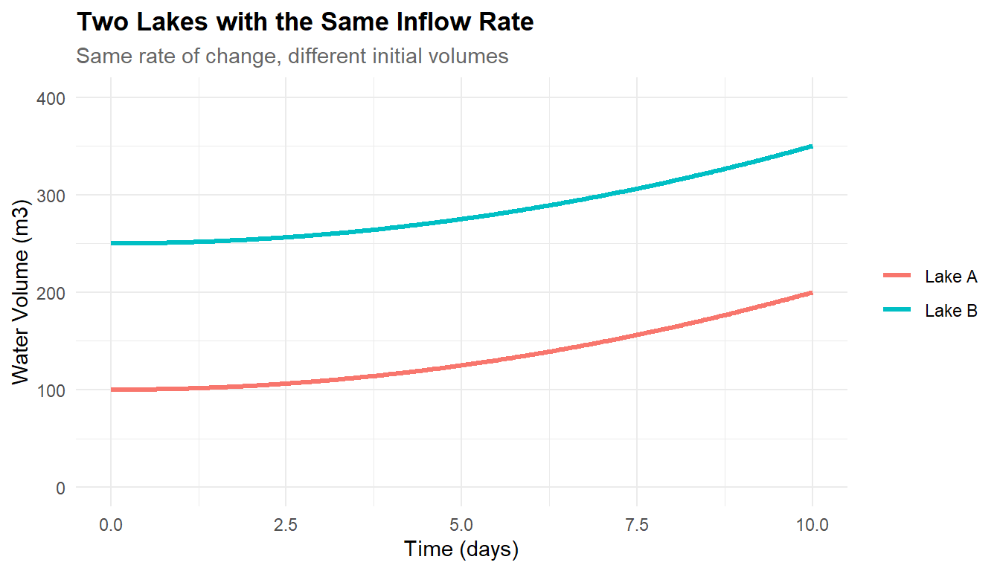

Chapter 5 Techniques of Integration (Indefinite Integrals)
5.1 Purpose of the Chapter
In the previous chapter, you learned what a definite integral means (accumulation) and why it can be computed using antiderivatives (the Fundamental Theorem of Calculus).
This chapter answers the next practical question:
How do we actually find antiderivatives when the integrand is not “obvious”?
Rather than treating integration as a list of formulas, this chapter emphasizes pattern recognition + strategy: identify the structure of a function, choose an appropriate method, and interpret the result in context.
By the end of this chapter, you should be able to:
- compute indefinite integrals using core rules and techniques,
- recognize when to use substitution, integration by parts, partial fractions, or numerical methods,
- connect each technique back to derivative rules (chain rule, product rule),
- interpret results using units, sign, and context, not just algebra.
5.2 Indefinite Integrals and the Constant of Integration
In the previous chapter, you learned how a definite integral measures net accumulated change over a specific interval. The bounds told you exactly where accumulation started and stopped, and the result was a single number with a clear physical meaning.
In this section, we remove those bounds and ask a different—but closely related—question:
What functions have a given rate of change?
The answer leads us to indefinite integrals, antiderivatives, and the essential role of the constant of integration.
5.2.1 From Definite to Indefinite Integrals
A definite integral \[ \int_a^b f(x)\,dx \] asks:
How much total change occurred between \(x=a\) and \(x=b\)?
An indefinite integral \[ \int f(x)\,dx \] asks something more open-ended:
What function (or functions) have derivative equal to \(f(x)\)?
When the bounds disappear, two important things change:
The result is no longer a number.
An indefinite integral produces a function.The accumulation is no longer anchored.
Without a starting point, we cannot say how much has accumulated—only how accumulation grows.
This is why we write: \[ \int f(x)\,dx = F(x) + C, \] where \(F'(x) = f(x)\).
The indefinite integral does not describe a single accumulated quantity.
It describes an entire family of possible accumulation functions.
5.2.2 Integrals as Families of Functions
Consider the rate function: \[ f(x) = 2x. \]
Any of the following functions has derivative \(2x\): \[ x^2,\quad x^2 + 3,\quad x^2 - 10,\quad x^2 + C. \]

Remember from Calc I that a derivative function f(x) describes the slopes of a function. The slopes of the functions on the right are all the same for the same x value. So a constant doesn’t impact slope.
All of these functions increase at the same rate for the same values of \(x\).
The only difference is where they start.
This is the key conceptual shift:
An indefinite integral describes how accumulation changes, not how much has accumulated so far.
The missing information is the starting value—and that missing information is encoded in the constant \(C\).
5.2.3 Antiderivatives and the “+ C”
An antiderivative of \(f(x)\) is any function whose derivative is \(f(x)\).
Because derivatives eliminate constants:
Differentiate term by term: \[ \frac{d}{dx}\big(F(x) + C\big) = \frac{d}{dx}F(x) + \frac{d}{dx}C. \]
Since a constant does not change with \(x\), \[ \frac{d}{dx}C = 0. \]
Therefore, \[ \frac{d}{dx}\big(F(x) + C\big) = F'(x) + 0 = F'(x). \]
Every antiderivative comes with an unavoidable ambiguity.
That ambiguity is not a flaw—it reflects reality.
5.2.3.1 Why Antiderivatives Are Not Unique
If \(f(x)\) represents a rate (such as carbon flux, water inflow, or population growth), then the accumulated amount depends on initial conditions:
- How much carbon was already present?
- How much water was in the reservoir at the start?
- What was the initial population size?
Different starting values produce different accumulation curves—but all follow the same rate of change.
Mathematically, this is why we must include the constant of integration, \(+C\).
Environmental Example: Two Lakes with the Same Inflow Rate
Suppose two lakes experience the same inflow rate of water, modeled by \[ f(t) = 2t \quad \text{(m³/day)}, \] where \(t\) is time in days.
This rate describes how quickly water is entering each lake at any moment.
Integrating the rate gives an accumulation function: \[ V(t) = t^2 + C, \] where \(V(t)\) is the volume of water in the lake and \(C\) represents the initial volume.
Now suppose:
- Lake A starts with 100 m³ of water
- Lake B starts with 250 m³ of water
Both lakes gain water according to the same rate, so their accumulation functions have the same shape.
The only difference is their starting point.
- Lake A: \(V_A(t) = t^2 + 100\)
- Lake B: \(V_B(t) = t^2 + 250\)
Graphically, these curves are vertical shifts of one another.

Key InsightThe rate of change determines the shape of accumulation.
Initial conditions determine the vertical position.
This is why antiderivatives are not unique:
the mathematics reflects the physical reality that systems can evolve at the same rate while starting from different states.
5.2.3.2 Vertical Shifts and Initial Conditions
The constant \(C\) represents a vertical shift of the accumulation function.
Conceptually:
- The shape of the curve is determined by the rate \(f(x)\).
- The vertical position is determined by initial conditions.
This mirrors environmental modeling:
- Same rainfall rate → same growth pattern of water volume
- Different initial storage → different total volume at all times
Ignoring \(C\) is equivalent to assuming the system always starts at zero—which is rarely justified unless explicitly stated.
5.2.3.3 Why Constants Cancel in Definite Integrals
When computing a definite integral using an antiderivative: \[ \int_a^b f(x)\,dx = [F(x) + C]_a^b, \] the constant cancels: \[ (F(b) + C) - (F(a) + C) = F(b) - F(a). \]
This is why definite integrals do not require a constant of integration.
A definite integral measures change between two points, not absolute level.
Only differences matter.
Indefinite integrals, by contrast, describe absolute accumulation, so the constant matters.
5.2.4 Quick Interpretation Habit
To use indefinite integrals correctly—especially in applied contexts—it helps to adopt two quick interpretation checks.
5.2.4.1 Units in Indefinite Integrals
Even without bounds, units still carry meaning.
If:
- \(f(x)\) has units of rate (e.g., kg/day),
- and \(x\) has units of time (days),
then: \[ \int f(x)\,dx \] has units of accumulated quantity (kg).
However, without bounds:
- you do not yet know how much has accumulated,
- only how accumulation depends on \(x\).
This distinction prevents a common mistake: treating an indefinite integral as a physical total without specifying a reference point.
5.2.4.2 Determining \(C\) from a Known Starting Value
In real problems, the constant \(C\) is determined using initial conditions.
Example: - Suppose \(f(t)\) is a rate of change. - You find an antiderivative \(F(t) + C\). - You are told that the accumulated quantity equals \(A_0\) at time \(t=t_0\).
Then you solve: \[ F(t_0) + C = A_0 \] to determine \(C\).
This step turns a family of solutions into a specific model.
5.2.5 Key Takeaway
Indefinite integrals describe how accumulation grows; the constant of integration encodes where accumulation starts.
Definite integrals eliminate this ambiguity by focusing on change between two points.
Indefinite integrals retain it—because real systems depend on initial conditions.
Understanding this distinction is essential before learning any integration technique, because every technique ultimately produces an antiderivative—and every antiderivative represents a family of possible accumulated states.
5.3 Reverse Differentiation as a Skill
At this stage, integration should not feel like a new topic—it should feel like recognition.
Every integration rule you learn already exists somewhere in your derivative toolkit. The challenge is not memorizing formulas, but training yourself to see an integrand as the derivative of something familiar.
Think of this section as building an antiderivative dictionary and learning how to look up entries quickly.
5.3.1 The “Antiderivative Dictionary”
An antiderivative dictionary is a mental catalog that pairs common derivatives with their original functions. When you integrate, you are asking:
Have I seen this derivative before?
Below are the core entries you should know cold.
5.3.1.1 Power Rule (in Reverse)
From differentiation: \[ \frac{d}{dx}(x^n) = nx^{n-1} \]
Reversing this: \[ \int x^n \, dx = \frac{x^{n+1}}{n+1} + C \quad (n \neq -1) \]
Examples \[ \int x^4 dx = \frac{x^5}{5} + C \]
\[ \int x^{-3} dx = \frac{x^{-2}}{-2} + C = -\frac{1}{2x^2} + C \]
5.3.1.2 The Special Case: \(x^{-1}\)
The power rule fails when \(n = -1\).
Instead: \[ \int \frac{1}{x}\,dx = \ln|x| + C \]
This is not arbitrary—it comes directly from: \[ \frac{d}{dx}(\ln|x|) = \frac{1}{x} \]
Key recognition trigger:
Any time you see a lone \(1/x\), think logarithm.
5.3.1.3 Exponentials and Logarithms
Exponentials are special because they reproduce themselves under differentiation.
\[ \frac{d}{dx}(e^x) = e^x \]
So: \[ \int e^x dx = e^x + C \]
Similarly: \[ \int a^x dx = \frac{a^x}{\ln a} + C \quad (a > 0, a \neq 1) \]
Logarithms \[ \frac{d}{dx}(\ln|x|) = \frac{1}{x} \]
So: \[ \int \frac{1}{x} dx = \ln|x| + C \]
5.3.1.4 Basic Trigonometric Antiderivatives
These come directly from familiar derivative rules.
| Integrand | Antiderivative |
|---|---|
| \(\cos x\) | \(\sin x + C\) |
| \(\sin x\) | \(-\cos x + C\) |
| \(\sec^2 x\) | \(\tan x + C\) |
| \(\csc^2 x\) | \(-\cot x + C\) |
| \(\sec x \tan x\) | \(\sec x + C\) |
| \(\csc x \cot x\) | \(-\csc x + C\) |
Sign matters.
For sine and cosine in particular, the negative sign is part of the recognition.
5.3.2 Pattern Recognition Over Memorization
A common misconception is that integration is about remembering formulas.
In reality, successful integration looks like this:
- Scan the integrand
- Ask: “What derivative does this resemble?”
- Match structure, not symbols
- Apply the corresponding reverse rule
5.3.2.1 Reading an Integrand as a Derivative
Consider: \[ \int 6x^5 dx \]
Instead of thinking “apply the power rule,” think:
What function has derivative \(6x^5\)?
You know: \[ \frac{d}{dx}(x^6) = 6x^5 \]
So immediately: \[ \int 6x^5 dx = x^6 + C \]
This mindset becomes essential later when functions are more complicated.
5.3.2.2 Common Structures That Should Trigger a Rule
Here are some quick recognition cues:
- Powers of \(x\) → power rule
- \(1/x\) → logarithm
- \(e^x\) → exponential
- Trig functions alone → basic trig antiderivatives
- Constant multiples → pull out the constant
If nothing jumps out immediately, that’s a signal—not a failure. It often means a strategy (like substitution) is coming later.
5.3.3 Key Takeaway
Integration is reverse differentiation plus pattern recognition.
Build a small, reliable antiderivative dictionary.
Practice recognizing structures before computing.
Speed comes from understanding, not memorization.
Once this skill is in place, integration techniques become tools—not obstacles.
5.4 Substitution: When a Function Is Hiding Inside Another
Many integrals fail not because the function is complicated, but because it is nested.
Substitution is the technique that lets us temporarily ignore the outer complexity by focusing on the inner structure. Conceptually, it is nothing more than the chain rule in reverse.
5.4.1 The Big Idea: The Chain Rule in Reverse
Recall the chain rule from differentiation: \[ \frac{d}{dx}\big(F(g(x))\big) = F'(g(x))\,g'(x). \]
Substitution works when an integrand matches this derivative structure: \[ F'(g(x))\,g'(x). \]
For notational simplicity, we often write this pattern as \[ f(g(x))\,g'(x), \] where \(f\) represents the derivative of some outer function \(F\).
The key recognition step is:
Do I see a function inside another function, along with (almost) its derivative?
At first, this pattern can be difficult to spot. That is normal.
Recognition improves with repetition, not memorization.
Equally important, we will practice course correction: learning how to recognize when substitution is not working and what that tells you about which strategy to try next.
5.4.1.1 Recognizing \(f(g(x))g'(x)\)
Consider: \[ \int (3x^2 + 1)^5 \cdot 6x \, dx. \]
Read it structurally:
- Inner function: \(g(x) = 3x^2 + 1\)
- Outer function: \(F(u) = u^5\)
- Derivative of the inner function: \(g'(x) = 6x\)
This matches the chain rule pattern exactly.
Instead of expanding powers or managing products, we rename the inner function and simplify the structure.
5.4.1.2 Why Substitution Is a Change of Variable (Not a Trick)
Substitution is often taught procedurally, which makes it feel like a trick.
Conceptually, it is much simpler:
We change variables so that the integral matches something we already know how to do.
We are not changing the mathematics—only the perspective.
This mirrors modeling practice:
- If a process depends on temperature, we might re-express time-dependent data in terms of temperature.
- If a rate depends on concentration, we may analyze accumulation with concentration as the variable.
Substitution is exactly this idea, applied mathematically.
5.4.2 The Mechanics of \(u\)-Substitution
Once the structure is recognized, the mechanics follow a consistent pattern.
5.4.2.1 Step 1: Choose \(u\)
Choose \(u\) to be the inner function.
Example: \[ \int (3x^2 + 1)^5 \cdot 6x \, dx \]
Let: \[ u = 3x^2 + 1. \]
5.4.2.2 Step 2: Convert \(dx\) to \(du\)
Differentiate \(u\): \[ \frac{du}{dx} = 6x \quad \Rightarrow \quad du = 6x\,dx. \]
This step is not symbolic bookkeeping—it is where the meaning of the integral is preserved.
5.4.2.2.1 What \(dx\) Actually Means
Recall where integrals come from.
A definite integral begins as a Riemann sum: \[ \sum f(x_i)\,\Delta x. \]
Here: - \(f(x_i)\) is the height of each rectangle, - \(\Delta x\) is the width of each rectangle.
When we take the limit as the widths shrink, \[ \Delta x \to 0, \] the sum becomes an integral: \[ \int f(x)\,dx. \]
The symbol \(dx\) represents an infinitesimally small width measured in the \(x\)-direction.
5.4.2.2.2 Why \(dx\) Must Change When the Variable Changes
When we use substitution, we are no longer measuring accumulation in terms of \(x\).
We are changing variables and measuring accumulation in terms of a new quantity \(u\).
That means: - the “height” of each rectangle is rewritten in terms of \(u\), - the width must also be rewritten.
Leaving \(dx\) behind would mix measurements from two different coordinate systems.
5.4.2.2.3 What \(du = 6x\,dx\) Is Really Saying
When we compute: \[ du = 6x\,dx, \] we are expressing how an infinitesimal change in \(x\) corresponds to an infinitesimal change in \(u\).
- \(dx\) measures tiny steps in \(x\),
- \(du\) measures the corresponding tiny steps in \(u\),
- the factor \(6x\) tells us how those widths scale.
The product \(6x\,dx\) is the new width after changing variables.
5.4.3 Why Substitution Works
Substitution temporarily turns a composite rate into a simple rate.
You are effectively saying:
Let me measure accumulation with respect to the inner process first.
Once that accumulation is understood, you translate it back to the original variable.
5.4.4 Substitution in Definite Integrals
Substitution works the same way for definite integrals, with one improvement:
you can change the bounds instead of substituting back.
5.4.4.1 Changing the Bounds
Example: \[ \int_0^2 (3x^2 + 1)^5 \cdot 6x \, dx \]
Let: \[ u = 3x^2 + 1. \]
Convert the bounds:
- When \(x = 0\): \(u = 1\)
- When \(x = 2\): \(u = 13\)
Now the integral becomes: \[ \int_1^{13} u^5 \, du. \]
5.4.4.2 Why This Reduces Errors
- No need to rewrite \(x\) in terms of \(u\)
- Cleaner algebra
- Fewer opportunities to lose constants or signs
Worked Example: Why the Differential Must Change
Let’s look at a substitution example where the role of \(dx\) and \(du\) is especially clear.
Evaluate: \[ \int 2x \, e^{x^2} \, dx \]
Step 1: Recognize the Structure
- Inner function: \(x^2\)
- Outer function: \(F(u) = e^u\)
- Derivative of the inner function: \(2x\)
This matches the chain rule pattern.
Step 2: Choose \(u\)
Let: \[ u = x^2. \]
Then: \[ du = 2x\,dx. \]
👉 The entire factor \(2x\,dx\) is exactly \(du\).
Step 3: Rewrite the Integral in Terms of \(u\)
\[ \int e^{u}\,du. \]
Step 4: Integrate and Substitute Back
\[ e^{x^2} + C. \]
Key Insight from This Example
The differential tells you what variable the accumulation is happening in.
Both the function and the width must be expressed in the same variable.
5.4.5 Common Pitfalls
Substitution errors almost always fall into one of the following categories.
5.4.5.1 Missing the Derivative Factor
\[ \int (x^2 + 1)^4 dx \]
There is no \(2x\) present.
This means substitution will not simplify the integral without additional manipulation.
5.4.6 Strategy Check
Before using substitution, ask:
- Do I see a nested structure?
- Is the derivative of the inner function present (up to a constant)?
- Will this rewrite the integral into something simpler?
If the answer is no, that is information—not failure.
5.4.7 Key Takeaway
Substitution is the chain rule in reverse, framed as a change of variable.
It simplifies nested structure by re-measuring accumulation in the variable that controls change.
If substitution fails, it usually fails clearly—telling you it is time for a different strategy.
5.4.8 When the Derivative Is Almost There – Close Enough Can Be Enough
Very often, the derivative of the inner function is present up to a constant factor.
This is not a problem—it is a feature.
5.4.8.2 Step 1: Recognize the Structure
- Inner function: \(3x^2 + 1\)
- Derivative: \(6x\)
The integrand contains \(x\), not \(6x\).
5.5 Integration by Parts: When Accumulation Involves a Product
Substitution helps when a function is nested.
Integration by parts is the complementary idea: it helps when a function is a product.
This technique is not new mathematics. It is simply the product rule, rearranged to solve a different question.
5.5.1 The Big Idea: The Product Rule in Reverse
Recall the product rule from differentiation: \[ \frac{d}{dx}\big(u(x)v(x)\big) = u'(x)v(x) + u(x)v'(x). \]
This rule tells us how the rate of change of a product is built from two interacting pieces:
one changing while the other is held fixed, and vice versa.
Integration by parts asks the inverse question:
If a rate involves a product, can we undo it?
To do this, we rearrange the product rule to isolate one of the product terms: \[ u(x)v'(x) = \frac{d}{dx}\big(u(x)v(x)\big) - u'(x)v(x). \]
This step is purely algebraic—but conceptually important.
It expresses a product-type rate as the difference between:
- the derivative of the full product, and
- a new product that may be simpler.
Now integrate both sides: \[ \int u(x)v'(x)\,dx = u(x)v(x) - \int u'(x)v(x)\,dx. \]
This is integration by parts.
5.5.2 What This Formula Is Really Doing
Integration by parts does not magically evaluate an integral.
It rearranges where the difficulty lives.
- One factor is differentiated (often simplifying it),
- the other is integrated (often staying manageable),
- the remaining integral is easier than the original.
In other words:
We trade one product for another, hoping the trade is in our favor.
If the new integral is simpler, the method succeeds.
If it is not, that is useful information—it means a different strategy is needed.
5.5.3 Why This Mirrors the Product Rule
Just as substitution reverses the chain rule,
integration by parts reverses the product rule.
- Substitution handles nesting.
- Integration by parts handles interaction.
Recognizing which structure you are facing is the key skill—not memorizing formulas.
5.5.4 The Formula (and What It Means)
We usually write the result as: \[ \int u\,dv = uv - \int v\,du. \]
This is not something to memorize blindly.
It is a bookkeeping statement that encodes the product rule.
Conceptually:
We trade one product for another that is easier to integrate.
5.5.5 When Integration by Parts Is the Right Tool
Integration by parts is useful when:
- the integrand is a product of two functions, and
- differentiating one factor simplifies it.
Classic triggers include:
- polynomials multiplied by exponentials or trig functions,
- logarithms multiplied by anything,
- inverse trig functions multiplied by powers of \(x\).
A useful diagnostic question is:
If I differentiate one factor, does it become simpler?
If yes, integration by parts is a good candidate.
Quick Diagnostic Example
Consider the integral: \[ \int x \sin x \, dx. \]
Before doing any computation, ask:
If I differentiate one factor, does it become simpler?
- Differentiating \(x\) gives \(1\), which is simpler.
- Differentiating \(\sin x\) gives \(\cos x\), which is not simpler in any meaningful way.
This suggests choosing \(u = x\) is a good strategic move.
What a “Good” Choice Looks Like
- Start with: \(x \sin x\)
- Differentiate \(x \rightarrow 1\)
The product has lost structure.
That is what “easier” means here.
What a “Bad” Choice Looks Like
If instead you differentiate the other factor:
- Start with: \(x \sin x\)
- Differentiate \(\sin x \rightarrow \cos x\)
The product is still a product of two nontrivial functions.
Nothing has simplified.
This is a warning sign.
The Takeaway
“Easier” does not mean finished.
It means less structure than before.
If differentiating a factor removes complexity, integration by parts is likely to help.
5.5.6 Choosing \(u\) and \(dv\)
The method requires a choice:
- one part becomes \(u\),
- the other becomes \(dv\).
There is no single correct rule, but a common guideline is:
Choose \(u\) to be the factor that becomes simpler when differentiated.
This often—but not always—means:
- logarithms,
- inverse trig functions,
- algebraic powers of \(x\).
5.5.7 A First Worked Example
Evaluate: \[ \int x e^x \, dx. \]
5.5.7.1 Step 1: Choose \(u\) and \(dv\)
Let: \[ u = x. \]
Take the derivative of both sides with respect to \(x\): \[ \frac{du}{dx} = \frac{d}{dx}(x) = 1. \]
Multiply both sides by \(dx\): \[ du = dx. \]
This tells us that an infinitesimal change in \(u\) is the same as an infinitesimal change in \(x\).
Now choose the remaining part of the integrand to be \(dv\):
Let: \[ dv = e^x\,dx. \]
To find \(v\), integrate both sides: \[ \int dv = \int e^x\,dx. \]
This gives: \[ v = e^x. \]
Here, we are identifying which part of the product will be accumulated (integrated) when we reverse the product rule.
Together, these steps do the following:
- \(u\) is the factor we plan to differentiate, producing \(du\),
- \(dv\) is the factor we plan to integrate, producing \(v\).
This choice determines how the product rule is unwound in the next step.
5.5.8 Why This Worked
Originally, the integral involved a product that could not be simplified directly.
By differentiating \(x\), we turned it into a constant.
By integrating \(e^x\), we left it unchanged.
The result was an integral that was simpler than the original.
That is the goal of integration by parts.
5.5.9 A Second Example: Logarithms
Evaluate: \[ \int \ln x \, dx. \]
At first glance, this looks like it should require substitution—but there is no obvious inner function.
Instead, think of it as a product: \[ \ln x = (\ln x)\cdot 1. \]
5.5.10 A Useful Interpretation
Integration by parts redistributes where the complexity lives.
- One factor is differentiated (losing complexity),
- the other is integrated (often staying similar).
If the trade makes the remaining integral simpler, the method succeeds.
If it does not, that is a signal to try a different strategy.
5.5.11 Common Pitfalls
5.5.11.1 Choosing \(u\) That Gets More Complicated
Example: \[ \int x e^x dx \]
Choosing: \[ u = e^x \] does not help—its derivative is still \(e^x\).
Good choices simplify when differentiated.
5.5.12 Strategy Check
Before using integration by parts, ask:
- Is the integrand a product?
- Will differentiating one factor simplify it?
- Does substitution clearly not apply?
If yes, integration by parts is likely the right tool.
5.5.13 Key Takeaway
Integration by parts is the product rule in reverse.
It works by trading one product for another that is easier to integrate.
Mastery comes not from memorizing the formula, but from recognizing when a product structure can be simplified through differentiation.
Once this technique is comfortable, you are ready to handle integrals involving products, logarithms, and repeated structure—especially those that arise naturally in modeling and applications.
5.6 Partial Fractions: When a Rational Function Can Be Taken Apart
Substitution helps when a function is nested.
Integration by parts helps when a function is a product.
Partial fractions address a different structure altogether:
ratios of polynomials.
When an integrand is a rational function, \[ \frac{P(x)}{Q(x)}, \] partial fractions allows us to rewrite that ratio as a sum of simpler pieces whose antiderivatives we already know.
5.6.1 The Big Idea: Decomposing a Ratio into Simpler Parts
The core idea behind partial fractions is not calculus—it is algebra.
Instead of integrating a complicated fraction directly, we ask:
Can this rational function be written as a sum of simpler rational functions?
If the answer is yes, then integration becomes straightforward, because integration is linear: \[ \int (f(x) + g(x))\,dx = \int f(x)\,dx + \int g(x)\,dx. \]
5.6.2 When Partial Fractions Is the Right Tool
Partial fractions is appropriate when:
- the integrand is a rational function (a polynomial divided by a polynomial),
- the degree of the numerator is less than the degree of the denominator (or can be made so),
- the denominator can be factored into simpler pieces.
If these conditions are met, partial fractions is often the most direct strategy.
5.6.3 Step 0: Make the Rational Function Proper
Before decomposing, always check degrees.
If: \[ \deg(P) \ge \deg(Q), \] perform polynomial division first.
Example: \[ \frac{x^2 + 1}{x - 1} = x + 1 + \frac{2}{x - 1}. \]
Only the proper fraction needs partial fractions.
5.6.4 The Big Structural Insight
The denominator controls the form of the decomposition.
Each factor in the denominator corresponds to a term in the decomposition.
We match structure first—just as with substitution and integration by parts.
5.6.4.1 Why We Break the Fraction Apart
At first glance, partial fractions can feel like we are making the problem more complicated by introducing multiple terms.
In reality, we are doing the opposite.
A rational function such as \[ \frac{P(x)}{Q(x)} \] is often difficult to integrate directly because it does not match any antiderivative rule we know.
But integration is linear: \[ \int (f(x) + g(x))\,dx = \int f(x)\,dx + \int g(x)\,dx. \]
So our goal is to rewrite a single complicated ratio as a sum of simple ratios, each of which matches a familiar antiderivative.
5.6.4.2 What We Are Trying to Create
When the denominator factors into linear terms, we aim to produce fractions of the form: \[ \frac{1}{x - a}. \]
This is not arbitrary.
We do this because we already know the antiderivative: \[ \int \frac{1}{x - a}\,dx = \ln|x - a| + C. \]
Once the integrand is written in this form, the calculus is finished.
5.6.4.3 How the Denominator Dictates the Form
Each factor in the denominator represents a potential rate behavior that contributes to the overall expression.
For example: \[ (x - 1)(x + 2) \] leads to terms of the form: \[ \frac{A}{x - 1} + \frac{B}{x + 2}. \]
Each term isolates the influence of one factor in the denominator and turns it into a rate with a known accumulation rule.
5.6.4.4 The Unifying Idea
Partial fractions is not about solving for constants.
It is about engineering the integrand so that every piece matches a known antiderivative identity.
The constants \(A\) and \(B\) are simply whatever values make the algebra work.
5.6.4.5 Structural Parallel
This mirrors earlier techniques:
- Substitution rewrites a complicated expression so it matches the chain rule in reverse.
- Integration by parts rewrites a product so it matches the product rule in reverse.
- Partial fractions rewrites a ratio so it matches logarithmic and power-rule antiderivatives.
In every case, the strategy is the same:
Change the form, not the meaning, until the structure becomes familiar.
That is the real power of partial fractions.
5.6.5 Case 1: Distinct Linear Factors
Consider: \[ \int \frac{5x + 1}{(x - 1)(x + 2)}\,dx. \]
Because the denominator factors into distinct linear terms, we write: \[ \frac{5x + 1}{(x - 1)(x + 2)} = \frac{A}{x - 1} + \frac{B}{x + 2}. \]
The goal is to find constants \(A\) and \(B\).
5.6.5.1 Solving for the Coefficients
Start with the decomposition: \[ \frac{5x + 1}{(x - 1)(x + 2)} = \frac{A}{x - 1} + \frac{B}{x + 2}. \]
Multiply both sides by the common denominator \((x - 1)(x + 2)\): \[ 5x + 1 = A(x + 2) + B(x - 1). \]
Expand the right-hand side: \[ 5x + 1 = Ax + 2A + Bx - B. \]
Combine like terms: \[ 5x + 1 = (A + B)x + (2A - B). \]
Match coefficients:
Coefficient of \(x\): \[ A + B = 5 \]
Constant term: \[ 2A - B = 1 \]
Solve the system.
Add the equations: \[ (A + B) + (2A - B) = 5 + 1 \] \[ 3A = 6 \] \[ A = 2. \]
Substitute into \(A + B = 5\): \[ 2 + B = 5 \] \[ B = 3. \]
So the coefficients are: \[ A = 2, \quad B = 3. \]
5.6.5.2 Integrate Term by Term
Once the decomposition is complete, the integral becomes a sum of simpler integrals: \[ \int \left(\frac{2}{x - 1} + \frac{3}{x + 2}\right)\,dx. \]
Use linearity to split the integral: \[ \int \left(\frac{2}{x - 1} + \frac{3}{x + 2}\right)\,dx = \int \frac{2}{x - 1}\,dx + \int \frac{3}{x + 2}\,dx. \]
Now pull constants outside each integral: \[ \int \frac{2}{x - 1}\,dx + \int \frac{3}{x + 2}\,dx = 2\int \frac{1}{x - 1}\,dx + 3\int \frac{1}{x + 2}\,dx. \]
Use the logarithm antiderivative identity: \[ \int \frac{1}{x-a}\,dx = \ln|x-a| + C. \]
Apply it to each term:
For \(a=1\): \[ 2\int \frac{1}{x - 1}\,dx = 2\ln|x - 1|. \]
For \(a=-2\): \[ 3\int \frac{1}{x + 2}\,dx = 3\ln|x + 2|. \]
Combine the results: \[ 2\ln|x - 1| + 3\ln|x + 2| + C. \]
The single constant \(C\) at the end accounts for the constants that would arise from each integral.
5.6.6 Case 2: Repeated Linear Factors
If the denominator contains a repeated linear factor such as \[ (x - a)^2, \] then each power of that factor requires its own term in the decomposition.
This ensures that the decomposition has enough flexibility to match the original numerator.
5.6.6.1 Example
Evaluate: \[ \int \frac{2x + 3}{(x - 1)^2}\,dx. \]
This example is deliberately chosen so that both terms in the decomposition matter.
5.6.6.2 Step 1: Write the Partial Fraction Decomposition
Because the factor \((x - 1)\) appears with power 2, we must include one term for each power: \[ \frac{2x + 3}{(x - 1)^2} = \frac{A}{x - 1} + \frac{B}{(x - 1)^2}. \]
The goal is to determine the constants \(A\) and \(B\).
5.6.6.3 Step 2: Clear the Denominator
Multiply both sides by \((x - 1)^2\): \[ 2x + 3 = A(x - 1) + B. \]
This equation must hold for all values of \(x\).
5.6.6.4 Step 3: Choose a Convenient Value of \(x\)
Because the equation is true for all \(x\), we can choose values that simplify the algebra.
5.6.6.5 Step 4: Solve for the Remaining Coefficient
Substitute \(B = 5\) back into the equation: \[ 2x + 3 = A(x - 1) + 5. \]
Subtract 5 from both sides: \[ 2x - 2 = A(x - 1). \]
Factor the left-hand side: \[ 2(x - 1) = A(x - 1). \]
Since this must hold for all \(x \neq 1\), we conclude: \[ A = 2. \]
5.6.6.6 Step 5: Write the Final Decomposition
\[ \frac{2x + 3}{(x - 1)^2} = \frac{2}{x - 1} + \frac{5}{(x - 1)^2}. \]
This is the key payoff of partial fractions:
a single complicated ratio rewritten as a sum of simpler pieces.
5.6.6.7 Step 6: Integrate Term by Term
Split the integral: \[ \int \left(\frac{2}{x - 1} + \frac{5}{(x - 1)^2}\right)dx. \]
Integrate each term separately:
\[ \int \frac{2}{x - 1}dx = 2\ln|x - 1| \]
\[ \int \frac{5}{(x - 1)^2}dx = 5\int (x - 1)^{-2}dx = -\frac{5}{x - 1}. \]
Combine the results: \[ 2\ln|x - 1| - \frac{5}{x - 1} + C. \]
5.6.7 Key Insight
For repeated linear factors:
- each power of the factor must appear in the decomposition,
- repeated factors produce both logarithmic and power-rule terms,
- choosing values that zero out factors simplifies coefficient solving,
- once decomposed, integration uses familiar rules only.
This case shows why repeated factors require extra terms:
without them, the algebra cannot reproduce the original numerator.
As always, the strategy is:
Rewrite first. Integrate second.
5.6.8 Why Partial Fractions Works
Partial fractions succeeds because it converts a single complicated rate into a sum of simple rates.
Each piece corresponds to a familiar antiderivative: - logarithms, - power rules, - inverse trigonometric functions.
Rather than inventing a new technique, partial fractions allows us to reuse old ones.
5.6.9 Common Pitfalls
5.6.9.1 Skipping Polynomial Division
If the fraction is not proper, decomposition will fail or become messy.
Always divide first.
5.6.10 Strategy Check
Before using partial fractions, ask:
- Is this a rational function?
- Is the fraction proper (or can it be made proper)?
- Can the denominator be factored?
If yes, partial fractions is likely the right tool.
5.6.11 Key Takeaway
Partial fractions replaces a difficult rational expression with a sum of simple ones.
It works because integration is linear and familiar antiderivatives are reusable.
Once mastered, partial fractions becomes a powerful algebraic tool for turning complex ratios into manageable integrals—especially in applied models involving rational rates.
5.7 Strategy: How to Choose a Method
By this point, you have seen several integration techniques.
The challenge now is no longer how to execute a method, but which method to try—and in what order.
This section focuses on strategy: recognizing structure, choosing wisely, and avoiding common traps that come from committing too early.
5.7.1 The Decision Tree
Every integration problem begins the same way:
Pause before computing.
Ask what kind of object you are looking at.
5.7.1.1 Step 1: Look for the Simplest Case First
Always start by asking:
Can this be integrated directly using basic rules?
Try this before anything else.
Basic rules include:
- Power rule
- Exponentials
- Logarithms
- Basic trigonometric antiderivatives
- Linearity (splitting sums, pulling out constants)
If the integrand is already a sum of familiar forms, you are done.
5.7.1.2 Step 2: Check for a Nested Structure → Substitution
If basic rules do not apply, ask:
Do I see a function inside another function, along with (almost) its derivative?
Indicators for substitution:
- Powers of expressions like \((3x^2+1)^5\)
- Exponentials like \(e^{x^2}\)
- Rational expressions where the numerator resembles the derivative of the denominator
If the answer is yes, try substitution next.
5.7.1.3 Step 3: Check for a Product → Integration by Parts
If substitution does not simplify the integrand, ask:
Is the integrand a product of two functions?
Then ask the diagnostic question:
If I differentiate one factor, does it become simpler?
Common triggers:
- \(x e^x\)
- \(x \sin x\)
- \(\ln x\)
- inverse trig functions times algebraic factors
If differentiating one part reduces complexity, integration by parts is a good candidate.
5.7.1.4 Step 4: Check for a Rational Function → Partial Fractions
If the integrand is a ratio of polynomials: \[ \frac{P(x)}{Q(x)}, \] ask:
- Is the degree of the numerator less than the degree of the denominator?
- Can the denominator be factored?
If yes, partial fractions is often the right tool.
5.7.1.5 Step 5: When None of These Apply
If:
- the function does not simplify,
- no structure matches known rules,
- or the antiderivative cannot be written in elementary functions,
then numerical methods or approximation may be appropriate.
Not every integral has a closed-form solution—and recognizing that is part of mathematical maturity.
5.7.1.6 A Compact “What Do I Try First?” Checklist
- Simplify algebraically (expand, cancel, split)
- Apply basic rules if possible
- Look for substitution
- Look for integration by parts
- Look for partial fractions
- Consider numerical or approximate methods
Order matters. Skipping early steps creates unnecessary difficulty.
5.7.1.7 Strategy Is Reversible
Trying a method and backing out is not failure.
It is feedback.
If:
- substitution makes the expression worse,
- integration by parts increases complexity,
- partial fractions cannot be set up cleanly,
that information tells you something important about the structure of the problem.
5.7.2 Workflow Habits That Prevent Mistakes
Good integration is not just about technique—it is about habits.
5.7.2.1 Rewrite and Simplify First
Before choosing a method:
- expand products if helpful,
- cancel factors,
- rewrite powers and fractions,
- split sums.
Many “hard” integrals become easy after algebraic cleanup.
5.7.2.2 Check by Differentiating
Whenever possible, differentiate your result.
Ask:
- Do I recover the original integrand?
- Does the structure match?
This is the fastest way to catch sign errors, missing constants, or incorrect substitutions.
5.7.2.3 Units and Sign Checks (Especially in Applications)
In applied contexts:
- Check that the units of the result make sense
- Check whether the sign matches the physical interpretation
- accumulation should increase when rates are positive,
- decreases should be reflected by negative values.
A mathematically correct answer that violates units or interpretation is still wrong.
5.7.3 Final Strategy Takeaway
Integration is not about choosing the “right formula.”
It is about recognizing structure and making the problem simpler, step by step.
When in doubt:
- simplify,
- match structure,
- choose the method that reduces complexity,
- and let failed attempts guide your next move.
That is how experts integrate—and how you will too.
5.8 Practice
5.8.1 Practice: Fast Recognition Drills
These exercises are not about careful algebra. They are about speed and confidence.
The goal is to train your brain to identify patterns before computing.
Drill A: Name the Rule (No Computing)
For each integrand, identify the rule you would use.
- \(\int x^7 dx\)
- \(\int \frac{1}{x} dx\)
- \(\int e^x dx\)
- \(\int 4\cos x dx\)
- \(\int x^{-2} dx\)
Do not integrate yet. Just name the rule.
Click to reveal solutions
- Power rule
- Logarithmic rule (\(\int 1/x\,dx\))
- Exponential rule
- Trigonometric rule (cosine) + constant multiple
- Power rule (negative exponent)
Drill B: One-Step Integrals
Now compute quickly.
- \(\int 3x^2 dx\)
- \(\int \sin x dx\)
- \(\int \frac{5}{x} dx\)
- \(\int e^x dx\)
- \(\int \cos x dx\)
Click to reveal solutions
- \(x^3 + C\)
- \(-\cos x + C\)
- \(5\ln|x| + C\)
- \(e^x + C\)
- \(\sin x + C\)
Drill C: Recognition First, Then Solve
Before integrating, say out loud:
> “This looks like the derivative of…”
- \(\int 8x^3 dx\)
- \(\int \cos x dx\)
- \(\int a^x dx\)
Then compute.
Click to reveal solutions
\(2x^4 + C\)
(since \(\frac{d}{dx}(2x^4) = 8x^3\))\(\sin x + C\)
(since \(\frac{d}{dx}(\sin x) = \cos x\))\(\frac{a^x}{\ln a} + C\)
(since \(\frac{d}{dx}(a^x) = a^x \ln a\))
Why These Drills Matter
Later integration techniques—substitution, integration by parts, partial fractions—all depend on recognition.
If you cannot instantly recognize basic antiderivatives, advanced techniques will feel overwhelming.
Think of this section as learning vocabulary before writing sentences.
5.8.2 Practice: Substitution (u-Sub) Pattern Recognition and Application
This practice section is designed to slow things down before computation.
Your goal is to see the structure first, then execute the mechanics.
Part A: Identifying the Parts of the Integral (Pattern Recognition)
For each integrand below:
- Identify the inner function (if there is one).
- Identify the derivative of the inner function.
- Decide whether substitution is appropriate.
- Check whether the derivative is present exactly, off by a constant, or missing.
Do not compute the integral yet.
A Helpful Instruction: “Off by a Constant” Is Still OK
When checking for substitution, the derivative of the inner function does not need to appear perfectly.
If the integrand contains \[ g'(x)\quad \text{or} \quad c\,g'(x), \] where \(c\) is a constant, substitution still works.
In that case: - factor out the constant, - proceed with substitution, - and account for the constant in front of the integral.
What does not work is when the mismatch depends on \(x\).
Warning: Some Problems Are Designed Not to Use Substitution
The list below intentionally mixes problems where substitution does work with problems where it does not.
Your job is to tell the difference before computing.
A7.
\[ \int (x + 1)^4 \, dx \]
Click to reveal analysis
- A1
- Inner function: \(3x^2 + 1\)
- Derivative: \(6x\)
- Match: exact
- Substitution: ✔️
- Inner function: \(3x^2 + 1\)
- A2
- Inner function: \(x^2 + 1\)
- Derivative: \(2x\)
- Match: missing
- Substitution: ✖️
- Reason: no factor of \(x\) to supply \(du\)
- Inner function: \(x^2 + 1\)
- A3
- Inner function: \(x^2\)
- Derivative: \(2x\)
- Match: exact
- Substitution: ✔️
- Inner function: \(x^2\)
- A4
- Structure: product, not nesting
- Substitution: ✖️
- Reason: derivative mismatch depends on \(x\); integration by parts is appropriate
- Structure: product, not nesting
- A5
- Inner function: \(x^2 + 7\)
- Derivative: \(2x\)
- Match: off by a constant
- Substitution: ✔️
- Inner function: \(x^2 + 7\)
- A6
- Inner function: \(5x\)
- Derivative: \(5\)
- Match: off by a constant
- Substitution: ✔️
- Inner function: \(5x\)
- A7
- Inner function: \(x + 1\)
- Derivative: \(1\)
- Match: exact
- Substitution: ✔️ (though basic power rule also works)
- Inner function: \(x + 1\)
Part B: Solve Using Substitution
Now compute each integral where substitution is appropriate.
If substitution is not appropriate, do not force it.
B5.
\[ \int (x + 1)^4 \, dx \]
Click to reveal solutions
- B1
- Let \(u = 3x^2 + 1\), \(du = 6x\,dx\) \[ \frac{(3x^2 + 1)^6}{6} + C \]
- B2
- Let \(u = x^2\), \(du = 2x\,dx\) \[ e^{x^2} + C \]
- B3
- Let \(u = x^2 + 7\), \(du = 2x\,dx\) \[ 2\ln(x^2 + 7) + C \]
- B4
- Let \(u = 5x\), \(du = 5\,dx\) \[ \frac{1}{5}\sin(5x) + C \]
- B5
- Let \(u = x + 1\), \(du = dx\) \[ \frac{(x + 1)^5}{5} + C \]
Reflection Prompt
After completing this section, ask yourself:
- Did I identify the inner function before choosing \(u\)?
- Did I check whether the derivative was exact, off by a constant, or missing?
- Did I consciously reject substitution when the structure did not fit?
Being able to say “this is not a substitution problem” is a core integration skill.
5.8.3 Practice: Integration by Parts (Pattern Recognition and Application)
This practice section focuses on deciding when integration by parts is appropriate and executing it deliberately.
Remember: integration by parts is not about memorizing a formula—it is about strategically simplifying a product.
Part A: Identifying the Structure (Pattern Recognition)
For each integrand below:
- Decide whether the integrand is a product.
- Ask the diagnostic question:
> If I differentiate one factor, does it become simpler? - Decide whether integration by parts is appropriate.
- If yes, identify a good choice for \(u\) and \(dv\).
Do not compute the integral yet.
A Helpful Instruction: What “Simpler” Means
A factor becomes simpler if differentiation: - reduces its degree, - removes structure (e.g., polynomial → constant), - turns a complicated function into a basic one.
Differentiation that preserves or increases complexity is usually a bad sign.
Warning: Not Every Product Uses Integration by Parts
Some products are better handled by: - substitution, - basic rules, - or algebraic simplification.
These problems intentionally mix cases where integration by parts does and does not work.
A6.
\[ \int x^2 e^x \, dx \]
Click to reveal analysis
- A1
- Product: yes
- Simplifies when differentiating \(x\)
- Method: integration by parts
- Good choice: \(u = x\), \(dv = e^x dx\)
- Product: yes
- A2
- Product: yes
- Simplifies when differentiating \(x\)
- Method: integration by parts
- Good choice: \(u = x\), \(dv = \sin x dx\)
- Product: yes
- A3
- Product: yes
- Better structure: nesting
- Method: substitution
- Reason: derivative matches inner function
- Product: yes
- A4
- Product: implicit (\(\ln x \cdot 1\))
- Simplifies when differentiating \(\ln x\)
- Method: integration by parts
- Good choice: \(u = \ln x\), \(dv = dx\)
- Product: implicit (\(\ln x \cdot 1\))
- A5
- Not a meaningful product
- Method: basic power rule
- Reason: no simplification via differentiation
- Not a meaningful product
- A6
- Product: yes
- Simplifies when differentiating \(x^2\)
- Method: integration by parts (possibly repeated)
- Product: yes
Part B: Solve Using Integration by Parts
Now compute each integral where integration by parts is appropriate.
Write your choices of \(u\) and \(dv\) clearly before applying the formula.
B4.
\[ \int x^2 e^x \, dx \]
Click to reveal solutions
- B1
- Let \(u = x\), \(dv = e^x dx\) \[ x e^x - e^x + C \]
- B2
- Let \(u = x\), \(dv = \sin x dx\) \[ -x \cos x + \sin x + C \]
- B3
- Let \(u = \ln x\), \(dv = dx\) \[ x \ln x - x + C \]
- B4
- Let \(u = x^2\), \(dv = e^x dx\)
Reflection Prompt
After completing this section, ask yourself:
- Did I confirm the integrand was a product before choosing integration by parts?
- Did differentiating \(u\) actually simplify the expression?
- If integration by parts failed, did that point me toward a better strategy?
Being able to reject integration by parts confidently is just as important as using it correctly.
5.8.4 Practice: Partial Fractions (Structured Practice)
This set gives you two problems of each major type, with solutions that show the key algebraic steps, not just the final answer.
For each problem: 1. Set up the decomposition. 2. Solve for the coefficients. 3. Integrate term by term.
P1.2
\[ \int \frac{4x - 1}{(x - 1)(x + 3)}\,dx \]
Click to reveal solutions
P1.1
Set up: \[ \frac{3x + 5}{(x + 1)(x + 2)} = \frac{A}{x + 1} + \frac{B}{x + 2}. \]
Clear denominators: \[ 3x + 5 = A(x + 2) + B(x + 1). \]
Expand: \[ 3x + 5 = (A + B)x + (2A + B). \]
Match coefficients: \[ A + B = 3,\quad 2A + B = 5. \]
Subtract: \[ A = 2,\quad B = 1. \]
Integrate: \[ \int \left(\frac{2}{x + 1} + \frac{1}{x + 2}\right)dx = 2\ln|x + 1| + \ln|x + 2| + C. \]
P1.2
Set up: \[ \frac{4x - 1}{(x - 1)(x + 3)} = \frac{A}{x - 1} + \frac{B}{x + 3}. \]
Clear denominators: \[ 4x - 1 = A(x + 3) + B(x - 1). \]
Expand: \[ 4x - 1 = (A + B)x + (3A - B). \]
Match coefficients: \[ A + B = 4,\quad 3A - B = -1. \]
Add: \[ 4A = 3 \Rightarrow A = \frac{3}{4}. \]
Then: \[ B = 4 - \frac{3}{4} = \frac{13}{4}. \]
Integrate: \[ \frac{3}{4}\ln|x - 1| + \frac{13}{4}\ln|x + 3| + C. \]
P2.2
\[ \int \frac{x + 1}{(x + 2)^2}\,dx \]
Click to reveal solutions
P2.1
Set up: \[ \frac{2x + 3}{(x - 1)^2} = \frac{A}{x - 1} + \frac{B}{(x - 1)^2}. \]
Clear denominators: \[ 2x + 3 = A(x - 1) + B. \]
Choose \(x = 1\): \[ 2(1) + 3 = B \Rightarrow B = 5. \]
Substitute back: \[ 2x + 3 = A(x - 1) + 5 \Rightarrow A = 2. \]
Integrate: \[ \int \left(\frac{2}{x - 1} + \frac{5}{(x - 1)^2}\right)dx = 2\ln|x - 1| - \frac{5}{x - 1} + C. \]
P2.2
Set up: \[ \frac{x + 1}{(x + 2)^2} = \frac{A}{x + 2} + \frac{B}{(x + 2)^2}. \]
Clear denominators: \[ x + 1 = A(x + 2) + B. \]
Choose \(x = -2\): \[ -1 = B. \]
Substitute back: \[ x + 1 = A(x + 2) - 1 \Rightarrow A = 1. \]
Integrate: \[ \int \left(\frac{1}{x + 2} - \frac{1}{(x + 2)^2}\right)dx = \ln|x + 2| + \frac{1}{x + 2} + C. \]
P3.2
\[ \int \frac{3x}{x^2 + 4}\,dx \]
Click to reveal solutions
P3.1
Split: \[ \int \frac{2x}{x^2 + 1}dx + \int \frac{1}{x^2 + 1}dx. \]
First term (substitution): \[ u = x^2 + 1,\quad du = 2x\,dx \Rightarrow \ln(x^2 + 1). \]
Second term: \[ \int \frac{1}{x^2 + 1}dx = \arctan x. \]
Final: \[ \ln(x^2 + 1) + \arctan x + C. \]
P3.2
Let: \[ u = x^2 + 4,\quad du = 2x\,dx. \]
Rewrite: \[ \int \frac{3x}{x^2 + 4}dx = \frac{3}{2}\int \frac{1}{u}du. \]
Integrate: \[ \frac{3}{2}\ln(x^2 + 4) + C. \]
5.8.5 Mixed Practice: Choosing and Executing the Right Method
Real integration problems rarely announce which technique they need.
This mixed practice set is designed to help you pause, diagnose, and choose deliberately before computing.
Section 1: Which Method?
For each integral below:
- Decide which method you would use
(basic rules, substitution, integration by parts, partial fractions). - Give a one-phrase justification.
- Do not compute yet.
M10.
\[ \int (x + 1)^7 \, dx \]
Click to reveal method choices
- M1: Basic power rule
- M2: Substitution (nested function + derivative present)
- M3: Integration by parts (product; \(x\) simplifies when differentiated)
- M4: Partial fractions (rational function with factorable denominator)
- M5: Substitution (inner function off by a constant)
- M6: Integration by parts (implicit product \(\ln x \cdot 1\))
- M7: Substitution (numerator is derivative of denominator up to constant)
- M8: Integration by parts (product; requires repetition)
- M9: Basic power rule (rewrite with negative exponent)
- M10: Basic power rule (simple polynomial)
Section 2: Solve
Now compute each integral using the method you identified above.
Write your setup clearly before integrating.
M10.
\[ \int (x + 1)^7 \, dx \]
Click to reveal solutions
M1 \[ \frac{x^6}{6} + C \]
M2 Let \(u = 3x^2 + 1,\; du = 6x\,dx\) \[ \frac{u^5}{5} + C = \frac{(3x^2 + 1)^5}{5} + C \]
M3 \[ x e^x - e^x + C \]
M4 Decompose: \[ \frac{3x + 2}{(x - 1)(x + 2)} = \frac{5}{3(x - 1)} + \frac{4}{3(x + 2)} \] \[ \frac {5}{3\ln|x - 1|} + \frac{4}{3\ln|x + 2|} + C \]
M5 \[ \frac{1}{4}\sin(4x) + C \]
M6 \[ x \ln x - x + C \]
M7 Let \(u = x^2 + 5,\; du = 2x\,dx\) \[ \ln(x^2 + 5) + C \]
M8 Apply integration by parts twice: \[ x^2 e^x - 2x e^x + 2e^x + C \]
M9 \[ -\frac{1}{x - 3} + C \]
M10 \[ \frac{(x + 1)^8}{8} + C \]